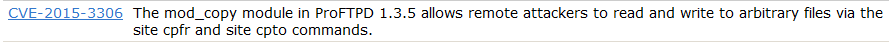
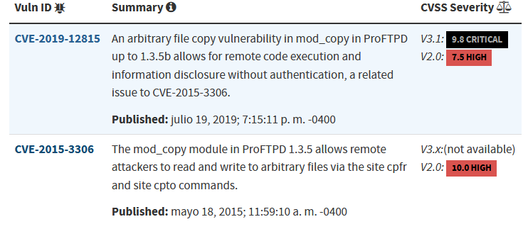
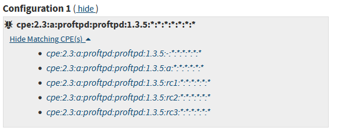
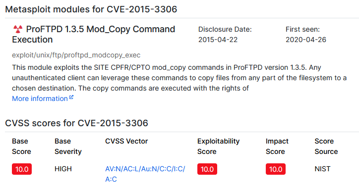

CVE, CVSS, CPE
Antes de usar alguna de las herramientas automáticas para la detección de estas vulnerabilidades vamos a entender a nivel manual como es este proceso.
Con uno de los anteriores resultados de recopilación de información sobre el objetivo en nmap vamos a empezar a buscar posibles vulnerabilidades en alguno de sus servicios.

ProFTPD 1.3.5
Para buscar esta información es necesario conocer algunos repositorios de información muy grandes.
Esto consiste fundamentalmente en un repositorio internacional en el que cuando un investigador en seguridad o cuando un fabricante descubre que hay una vulnerabilidad en un producto, lo que hace es que lo publica en esta página web.
Lo que hace Mitra es guardar esa vulnerabilidad en la base de datos y le asigna un número que lo identifica.
https://cve.mitre.org/cve/search_cve_list.html

Nos permite realizar ataques remotos que leen o escriben información arbitraria en el sistema que implemente esta tecnología.
Podemos buscar en sus referencias por algún exploit o podemos buscar en google.
https://github.com/t0kx/exploit-CVE-2015-3306
En el caso de tener varias vulnerabilidades lo mejor es centrarse en aquellas que sean de riesgo alto.
Para esto existen las siguientes webs:

Indica que es un riesgo muy alto.
El CPE es fundamentalmente un código que nos permite identificar un producto de un fabricante y que tiene una versión particular muy rápidamente.

Nos dice que esta vulnerabilidad en concreto está afectando a todo el software que tiene este CPE.
Cada una de las versiones de ese software tiene un CP asociado, lo que nos permite que cuando sale una vulnerabilidad rápidamente podamos asociarlas con todas las versiones de ese software que se ven afectadas por esta vulnerabilidad.
Esta web proporciona en un solo lugar toda la información asociada.

Esta web es interesante porque en la parte superior podemos ver si existen módulos de metasploit o PoC públicos.